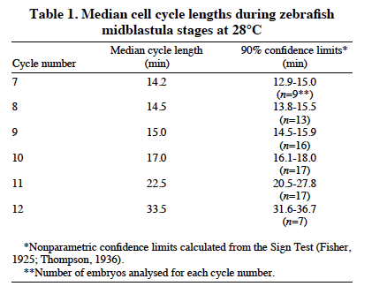
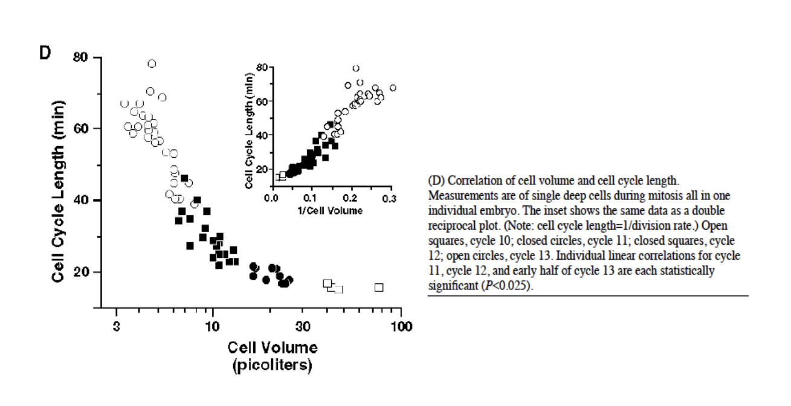
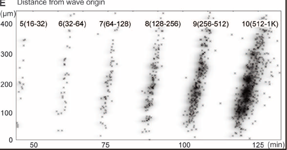
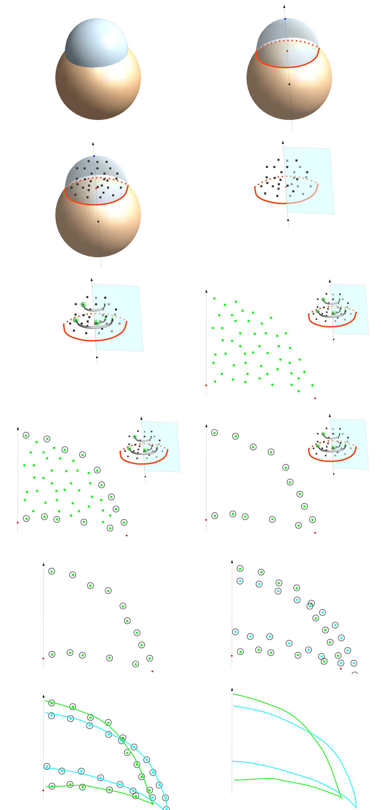
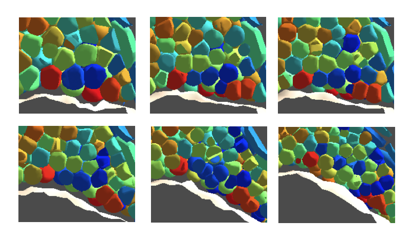
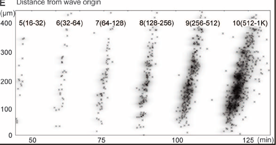
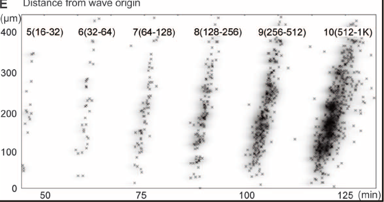

8. Simulated Reconstruction and Model Validation Through Case Studies
8.1. Investigating the Yolk Biomechanical Properties
We assume that the early development of the embryo depends on viscoelastic properties of the yolk. We aim at identifying these properties by assessing, using our simulation framework, their consequences on further morphogenesis. In particular, we expect that the yolk properties maintain the integrity of the all embryo (e.g. the yolk should resist the pressure exerted by the cells). It should however undergo successive transformations, flatten at the sphere stage, protrude at the doming stage. In addition, its active role in gastrulation is highly debated . Several of these aspects we be investigated in further sections.
We show here that minimal viscoelastic properties are sufficient to account for some of the embryo phenotypic features throughout cleavages and gastrulation.
Hypotheses
Our model is based on state of the art observations. The zebrafish zygote is a large cell filled with cytoplasm and lipid droplets. Starting prior the first divisions, both fluids segregate, the cytoplasm being sucked up into the dividing cells (see figure ). A lipid bilayer membrane progressively separates the cells at the animal pole from the lipid droplets, forming an independent structure called the yolk cell. After the \(9^{th}\) division cycle, the marginal deep cells divide with one daugthter cell fusing with the yolk, forming a structure called yolk syncytial layer (YSL).
Third harmonic generation (THG) imaging of the zebrafish embryo adapted from . Snapshots from the movie going from the one cell stage to the 64-cell stage. Developmental timing (min) indicated top left. Scalebar (100 microns) indicated bottom left.
In this context, from the zygote stage, we approximate the cells and the yolk as independent structures . To capture the dynamical mechanical interaction between the cells and the yolk, we model the yolk and the cells in the same particle-based paradigm.
Furthermore, we hypothesize that it is relevant to distinguish within the yolk, the yolk syncytial layer and the inner lipid droplet structure.
Two particle categories compose the yolk: the external yolk membrane particles form a 2-dimensional viscoelastic layer and the inner yolk particles represent the lipid droplets confined by the external layer.
We expect the external layer to keep its surface topology whereas the internal structure can re-arrange. This is a qualitative interpretation of imaging that provide plausible properties ().
Abstract schematic of the particles types in the modeled embryo. Green particles represent the cells, yellow particles the yolk membrane and red particles the lipid droplets.
The yolk membrane and cortex
In figure , the yellow particles materialize the yolk membrane. By yolk membrane, we mean not only the lipid bilayer surrounding the yolk but also the cytoskeleton underlying it (acto-myosin, micro-tubules...), corresponding to the yolk cortex. The yolk membrane topology is defined by a geodesic dome. It is derived from an icosahedron, one of the five Platonic solids and it remains invariant through time. An icosahedron's surface is composed of 20 identical equilateral triangles, 12 vertices and 30 edges. This topology is refined by subdividing each triangles by four new identical equilateral triangles. The new vertices are projected on the sphere. This process is repeated 4 times to approximate a spherical shape with 5120 triangles and 2562 vertices (see figure ).
Any other Platonic solid could have been chosen without any significant difference.
However, the icosahedron has the better trade-off between stability (its elementary faces are triangles) and volume maximization (only the dodecahedron occupied a slightly larger volume by it has pentagonal faces).
In our geodesic dome, every vertex but the original 12 has 6 direct neighbors, the original vertices have 5 direct neighbors. These direct neighbors are labeled as rank 1 neighbors. For each yolk membrane particle \(i\), this set of neighbors is denoted by \(\mathcal{N}^{\mathrm{my},1}_i\).
The forces exerted between yellow particles are pure elastic forces. Each rank 1 neighboring relationship is materialized by a linear spring. Between two yolk membrane particles \((i,j)\), the equation of the force reads:
\(k_{\mathrm{my}}\) is the stiffness constant which controls the ability to deform the neighboring link for a given applied force (higher \(k_{\mathrm{my}}\) gives stiffer resistance). \(r^l_{ij}\) is the rest length or the length of the neighboring link if no force is applied on it. Each link of the yolk membrane (i.e. links between yellow particles) has its own rest length. It is defined by the length of the link when the geodesic dome is projected on a sphere whose volume is equal to the desired yolk volume \(V_{\mathrm{yolk}}\) (radius \(R_{\mathrm{yolk}} = \sqrt[3]{\frac{3V_{\mathrm{yolk}}}{4\pi}}\)). Concretely, 5-neighbors vertices have shorter rest lengths compared to the 6-neighbors vertices. Without this rescaling, the equilibrium shape would converge toward the original Platonic solid and not toward the sphere.
As the yellow particles' neighborhood topology remains invariant, there is no plasticity in the yolk membrane alone: the original shape will be recovered after local mechanical deformation (local pushing or pulling). However, beyond certain limits, the membrane mesh may get tangled up and erratic behavior may occur. This is illustrated by an "abnormal" lip formed by the yolk membrane when the yolk membrane particles (yellow) are only interacting with their rank 1 neighbors (figure A). We hypothesize that increasing the yolk membrane stiffness and the spatial range of particle interactions would prevent this undesirable feature. When constraining yolk membrane particles by rank 1 and rank 2 interactions, the blastoderm-yolk margin remains smooth (figure B). Rank 2 neighbors of a yolk membrane particle are defined as rank 1 neighbors plus their rank 1 neighbors (figure F). All the corresponding links are materialized by linear springs with the same stiffness coefficient \(k_{\mathrm{my}}\) and rest lengths \(r^l\) defined with the same procedure as rank 1 neighbors. The rank 2 neighbor set is denoted by \(\mathcal{N}^{\mathrm{my},2}_i\).
Yolk membrane behavior depending on its particles' topological interactions. A: rank 1 interactions only. B: rank 1 + rank 2 interactions. The structural topology of the yolk membrane is a geodesic dome. A: Icosahedron. B,C,D,E: iterative subdivision of the original icosahedron to obtain the geodesic dome. F: the right vertex is a regular geodesic vertex and the left vertex is one of the 12 original icosahedral vertices. Rank 1 neighbors link in red, rank 2 neighbors link in yellow.
So far, we have idealized here is an empty balloon. The latter now has to be filled with a viscous fluid.
In the real yolk, if the yolk membrane is damaged, inner material is expelled out of the membrane.
This indicates that the inside pressure is higher than the outside.
We hypothesized that this difference of pressure is due to the cortical tension exerted by the yolk membrane. We introduced an additional parameter: \(c_{r^l}\), a coefficient reducing the rest lengths within the yolk membrane (dimensionless). This coefficient is smaller than \(1\) so that the rest length becomes \(r^l = c_{r^l} r^{l_0}\).
The equation of the force between two neighboring yolk membrane particles \((i,j)\) finally reads:
An yolk membrane as modeled above makes an empty elastic balloon. It has the ability to absorb and recover from tangential load but it hardly resists any load applied in a non-tangential manner. Inspired by the lipid droplets contours revealed by THG signals in figure , we filled the yolk sac with \(N_{iy}\) identical particles of volume \(V_{\mathrm{iy}}\) and radius \(R_{\mathrm{iy}}\) (see the red particles in figure ). Practically, \(N_{\mathrm{iy}} = 500\) particles were added in our simulation which is less than the number of lipid droplets estimated from the 3D data and represents a coarse-grained approximation.
We considered that the membrane yolk particles' radial radius is equal to the inner yolk particles' radius. So the volume occupied by the \(N_{\mathrm{iy}}\) inner yolk particles is equal to the volume of a sphere of radius \(R_{\mathrm{yolk}} - R_{\mathrm{iy}}\).
We applied between yolk particles and membrane particles and between inner particles themselves, similar rules of interaction as described for cell-cell interactions in chapter 3. The topology of these interactions is recomputed at each time step of the simulation, first through a metric selection then through a topological selection. This adaptive topology provides yolk plasticity through passive rearrangement of the inner yolk particles.
The interaction forces acting in between inner yolk particles or between inner yolk and yolk membrane particles are the same as the passive attraction/repulsion forces used between deep cells particles (section 3.2.3.1).
The system is underdetermined, there are \(N_{\mathrm{my}} + N_{\mathrm{iy}}\) equations and as many spatial variables. In addition, we have the following variables: \(\lambda_0\), \(w^{y}_{\mathrm{adh}}\), \(w^{y}_{\mathrm{rep}}\), \(k_{\mathrm{my}}\), \(c_{r^l}\), the simulation time step \(\Delta t_s\) and a number of other variables that were a priori (e.g. \(R_{\mathrm{my}}\), \(R_{\mathrm{iy}}\)) fixed or calibrated when designing the simulation (e.g. \(a\) and \(c^{\mathrm{max}}\) which determine the surface of contact between particles).
Finally, the simulation provides access to the following ratios:
and the last two free parameters are the yolk membrane surface scaling parameter \(c_{r^l}\) and simulation time step \(\Delta t_s\).
An experimental scenario to explore the parameter space
We expect the yolk to have specific behaviors in terms of deformation under external stress and subsequent resilience. In order to assess these features, we designed an experimental protocol, applied to both live specimens and simulated ones.
Confronting measurements in both cases is our strategy to explore the parameters space to:
qualitatively discuss the fitness landscape,
define optimal parameters.
Experimental protocol: live specimen
measure, start from simulated reconstructed data
These are the qualitative observations the quantitative measurements that can be derived from the in vivo imaging.
A spherical 1-cell stage embryo lies on its side in an agarose mold and a glass bead is pressed on the lateral side of the embryo for a period of time \(\Delta t\), starting at \(t_0\). The force is applied along an axis parallel to the agarose surface and, on the opposite side, the embryo is blocked by an agarose wall. Pressure is applied to the bead until it enters into the yolk by approximatively 40 percent of the yolk diameter. At \(t_1 = t_0 + \Delta t\), the bead is removed and the yolk progressively recovers its initial shape. The operation is recorded with a 3CCD camera (Hitachi HV-D20) on a Leica MZ16F stereo microscope (movie ).
Experimental deformation of the egg yolk.
Qualitatively, the yolk is deformable with the yolk membrane surrounding the bead in a crater like structure somewhat larger than the bead diameter. After removing the bead, the yolk quickly recovers its shape. The following measurements allow us to quantify the process.
We measured every 0.8 second the normalized length of the yolk along the compression axis: ratio of the deformed embryo's diameter \(L\) over the relaxed embryo's diameter \(L_r\) before compression.
Experimental deformation of the egg yolk. 1-cell stage, Lateral view, Animal pole to the right. \(t_0\): Onset of the deformation. \(t_1\): Maximum deformation. Measurement is realized every 0.8 second. We measure the distance \(L\) between the area pointed by the tip of the bead and the opposite side (black line). Scalebar 500 microns. Plot of the normalized deformation length as a function of time. The shape recovery is asymptotic to the normalized length at \(t_0\). Full recovery is nearly achieved by 8 seconds.
Experimental protocol: simulation
The simulated experimental protocol mimics the live one described above. The algorithmic implementation of the model integrates an artificial spherical bead which is forced to move toward the center of the yolk. Particles, whose original position lies inside the bead, are displaced by being projected on its surface. Similarly to the experimental live protocol, we do specify the force necessary to induce the particle's motion but we impose their displacement. The ball is removed when it has been sunk to a depth equal to 40 percent of the initial yolk diameter.
the normalized length of the yolk along the compression axis as the ratio of the deformed embryo's diameter \(L\) over the relaxed embryo's diameter \(L_r\) before compression.
The same measure is performed on experimental (resp. simulated) embryo generically denominated \(e\) (resp. \(s\)).
Snapshots of a simulation. The first and the third rows show the entire yolk from an external point of view and the second and forth rows show another yolk sliced to reveal the inner yolk particles. A,B,C,D,E,F: compression phase. G,H,I,J,K,L: relaxation phase. These simulated experiment have been realized by manually operating the spherical bead whereas in the study, the manipulation is automated. Original movies are available in
Fitness function
plot simu + experimental
We define a fitness function which allows us to confront measurements.
The fitness function \(F_{\mathrm{yolk relaxation}}\) sums the absolute difference between live and simulated normalized length evolution. We define \(L^s(i)\) (resp. \(L^l(i)\) the deformed yolk diameter of a simulated (resp. live) specimen measured at the timestep \(i\). \(L^s_r\) (resp. \(L^l_r\)) is the initial uncompressed yolk diameter. Hence, for \(n\) time steps, the equation of the fitness function reads:
The explored parameter space is 4-dimensional. We performed a regular sampling with the following ranges and cardinalities:
Ranges, cardinalities and units of the four parameters explored in this study.
For each realization, which means a simulation with a set of parameters, according to the protocol above, and leading to a phenotype, the fitness is evaluated according to the aforementioned function. The simulation time step has been calibrated to match the slope of the relaxation curve obtained in the live experiment (Fig. ). The calibrated value of a simulated time step is \(6.66667\) milliseconds (i.e. 120 simulated timestep is equivalent to 0.8 seconds)
Plots of the simulated normalized deformation length as a function of time. The red thick curve represents the experimental live measurement. The simulated measurements are colored according to their fitness value (from red for the best fitness, 0.1609 to blue for the worst, 7.1449). In abscissa, the normalized length of the yolk diameter is plotted. In ordinate, the time from the moment the bead is pulled away from the yolk surface.
This plot indicates that the simulated phenotype leads to a relaxation profile similar to the profile provided by the live experiment. However, another representation is needed to visualize the fitness pattern in the 4-dimensional parameter space. We developed an interface allowing us to visualize a 3-dimensional cube of fitness and select the forth dimension manually (Fig. ).
An example of 3D plot of the fitness landscape in the parameter space. This figure aims at presenting the coordinate system used in Fig. . Here, the repulsion coefficient \( \overline{w}^{y}_{\mathrm{rep}}\) of the force exerted between inner yolk particles has a fixed value (i.e. \(3.7\) \(10^{-6}\)). The vertical axis gives the coefficient \(c_{r^l}\) which determines the equilibrium surface of the yolk membrane. The depth axis gives the adhesion coefficient \( \overline{w}^{y}_{\mathrm{adh}}\) which modulates the cohesion of the inner yolk particles. The width axis gives the yolk membrane stiffness coefficient \( \overline{k}_{\mathrm{my}} \). It should be noted that the values actually plotted on the depth (resp. width) axis correspond to the value of \( w^{y}_{\mathrm{adh}}\) (resp. \( k_{\mathrm{my}} \)) and should be divided by \(\lambda_0\) (i.e. \(3.7\) \(10^{-6}\)) to match the over-lined variable values presented in Fig. .
Fitness landscape for the yolk relaxation experiment.
The left column represents the fitness landscape on the parameter space. The central column shows the normalized yolk volume difference between the simulated phenotype and the targeted volume of radius \(R_{\mathrm{yolk}}\). The right column is the same as the left one but keep only the phenotypes with a yolk volume less than 20 percent different from the targeted one. All the coordinates are described in Fig. . Each row corresponds to a different value of the coefficient of repulsion between inner yolk particles \( \overline{w}^{y}_{\mathrm{rep}} \). The value of \( \overline{w}^{y}_{\mathrm{rep}} \) varies regularly between \(3.7\) \(10^{-6}\) for the top row to \(5.55\) \(10^{-5}\) for the bottom row.
Fitness pattern analysis
We observe patterns of low (=optimal) fitness in the left column. The shape of isofitness patterns indicates that the adhesion coefficient between inner particles does not impact the relaxation behavior of the yolk (no effect of changes along the depth axis). We can thus interpret that the yolk membrane properties (stiffness and surface equilibrium) account for the good behavior of the system.
However, low values of inner yolk particle repulsion induce a shrinking of the yolk volume as it can be seen in row 1 to 5. Conversely, as the inner yolk repulsion increases, the yolk volume increases. From a biological point of view, this feature does not make sense as we would rather expect the yolk to be incompressible and indicates one of the limits of the model that have been chosen. We thus decided to limit the exploration of the parameter space to values that keep the yolk volume within a 20% variation of the targeted volume (right column).
In addition, when the inner yolk repulsion increases and the membrane stiffness is too high with a small yolk equilibrium surface, the numerical simulation of the model is diverging and the phenotype can no longer be computed (more and more missing points from the top to the bottom rows in the left and central column). The useful space displayed in the right column indicate a single layer of low fitness value and the spatial orientation of this layer shows the benefit of increasing membrane surface equilibrium and membrane stiffness.
The model thus indicates that the yolk membrane is responsible for the yolk relaxation behavior, the inner yolk particle being only used to fill the space and maintain the yolk volume. As already mentioned, yolk membrane actually means here membrane+cortex, and from a biological point of view, the low fitness domain should provide indications of appropriate fitness and surface equilibrium values for the yolk membrane+cortex.
Discussion
This very simple case study shows the potential and the limitations of the model and also brings a number of generic questions.
The choice of a multi agent framework led to the representation of the yolk and yolk membrane as collections of interacting particles. If the model seems indeed suitable to mimic some of the observed properties of the biological system, the consequence of inner yolk particles repulsion and attraction on the yolk volume is unlikely to be biologically relevant. We rather assume the inner yolk to be and incompressible liquid, although this hypothesis has not been validated experimentally. In any case, large variations as obtained through the simulation certainly have to be discarded. We assume that this drawback does not prevent to explore the membrane properties to try and interpret biologically the resulting fitness landscape.
The numerical implementation of the model brought a number of difficulties including instabilities of the numerical integration that prevented to complete the calculation of certain phenotypes. It however might be interpreted that most of the parameter space point that were not explored were actually unlikely to fit within the best fitness pattern. In addition, the computation time step that had to be set to fit the experimental scenario of the yolk relaxation is far too small to be used for the simulation of the embryo development until the end of gastrulation (i.e. 10 hpf). Such a time step is far to demanding in terms of computational power.
Interpreting the calculated fitness landscape first brought the problem of the representation and visualization of high dimensional data. Furthermore, we did not here fully explore the parameter space. Some of the observed behaviors suggest that several fitness layers arise from exploring values of the inner yolk particles repulsion coefficient. From row 4 in the left column of Fig. 8.15, the coexistence of two low fitness layers suggests that a periodic behavior might happen. Further exploring values along the vertical axis should be done. Hence, we so far have no explanation of this behavior of the model.
The biological interpretation of the model is a major issue. We expect at some point to be able to derive real physical values from the simulation parameters. The simulation values are scaled by lambda and additional stress-strain measurements would be needed to set this parameter other than arbitrarily.
The very simple experimental scenario explored here should lead to a more extensive study to i) provide measurements for a cohort of individual, ii) compare the yolk behavior in different locations, and at different developmental times, iii) control the applied force and possibly replace the pushing strategy by pulling with a know aspiration force. In addition, the measurement of the deformation might be more precise and accurate than performed here.
Finally, in addition to define an optimal fitness the model should allow defining a viability pattern. The fitness landscape and the viability pattern might then be adjusted by exploring other yolk desirable properties in terms of compatibility with later morphogenetic events such as doming or the constriction accompagnying gastrulation movements.
8.1.1. Hypotheses and Model
8.1.2. Simulation, Parameter Space and Validation
8.1.3. Discussion
8.2. Cell Cycle
Regarder papier Ben Simons sur cycle cellulaire cellule souche pour la mise en valeur d'un modèle à priori simple de rythmes cellulaire -> He, J. et al., 2012. How Variable Clones Build an Invariant Retina. Neuron, 75(5), pp.786–798. He:2012dg
In this study, except for the Enveloping Layer cell population (see section 8.4 XXXXXXX), the cell cycle is uncoupled from the other cellular mechanisms. It is so because we do not make any specific hypothesis on the interaction of the cell cycle length and the different morphogenetic events occuring during the zebrafish early development.
However, cells do divide and their size and number has is a factor of the zebrafish early development.
During the midblastula transition which starts at cycle 10 (512 to 1024 cells, 3hpf) and ends at the cycle 13, the cell cycle length increases as the zygotic transcription begins (). It has been postulated that the lengthening of the cell cycle correlates with the ratio of the nucleus size over the cell size, and, from the cycle 14, that the correlation stops ().
If this factor is fundamental for the early stages as a minimal number of cells is required to perform the different episodes of the zebrafish development, it appears that these episodes are robust to some perturbation of the cell cycle. In , a zebrafish mutant inhibiting the anaphase-promoting complex/cyclosome (emi1 for Early mitotic inhibitor-1) is introduced. It ceases all mitosis at the shield stage and still the embryo gastrulates and elongates.
In order to avoid perturbing the other mechanisms, we explore the possible cell cycling rules and fit them to experimental measures.
Questions
Q1. : the cell cycle is approximated as constant during the first ten division, what is this constant ?
Q2. : decide whether, after the tenth cell cycle, the progression of the cell cycle is geometric or arithmetic.
Q3. : as the cell cycle desynchronizes and we do not propose hypotheses to explain it, how to characterize this variability.
Bibiographical data
from Kane, D. & Kimmel, C., 1993. The zebrafish midblastula transition. Development

from Kane, D. & Kimmel, C., 1993. The zebrafish midblastula transition. Development

from Kane, D. & Kimmel, C., 1993. The zebrafish midblastula transition. Development
According to Kane and Kimmel , cell cycle increases as \(\frac{1}{V_{cell}}\). If cell is divided in two identical daughter cells, it means the cell volume is divided by 2 and the cell cycle double after eath mitosis. Geometric growth of the cell cycle.
However, data do not match their claim: (10->17min, 11->22min, 12->33min, 13->55min).
If cycle 10 at 3h, numcells 1000
then cycle 11 at 3h17min, 2000
cycle 12 at 3h39min, 4000
cycle 13 at 4h12min, 8000
cycle 14 at 6h07min 16000
..
if double
cycle 15 at 8h 32000
cycle 16 at 12h 64000
Data paper Science Olivier, N. et al., 2010. Cell lineage reconstruction of early zebrafish embryos using label-free nonlinear microscopy. Science

8.2.1. Hypotheses and Model
The cell number can be deduced from the cell cycle length of each cell as there is no/few mitosis during the first ten hours (Fig. ).
Simplification assumptions: two rules with a minimal set of parameters are proposed, cell cycle following either a geometric or an arithmetic progression. In each model, two parameters determine the cell cycle progression: one determining the mean of the distribution and another its range.
In the following, the length of the cell cycle is denoted by \(\textrm{CCL}\). It is function of an integer value which is its iteration. \(\textrm{CCL}(12)\) is the length of the 12\(^{\textrm{th}}\) cell cycle. The iteration from which the cell cycle augments is denoted by \(\lambda_{\textrm{cc,s}}\) and the last iteration by \(\lambda_{\textrm{cc,e}}\). The timing of a cell cycle is denoted by \(\textrm{CCT}\).
Geometric progression of the cell cycle
The geometric progression of the cell cycle iteratively multiplies the length of the cell cycle by a value, the common ratio, denoted by \(r\).
$$ \forall n \in \left[ \lambda_{\textrm{cc,s}}, \lambda_{\textrm{cc,e}} \right], \textrm{CCL}(n+1) = r \cdot \textrm{CCL}(n)$$
We suppose that the common ratio follows a uniform distribution centered on \(r_0\) and with a range of \(w_r\).
During the development of a simulated embryo, each cell division requires the generation of a new random common ratio \(r\) determined with the parameters \(r_0\) and \(w_r\).
As we also make the assumption that the cell cycle length is always increasing after each division, the common ratio \(r\) must be larger than 1. It implies the following constraint on the parameters of the study:
$$ w_r \leq 2 (r_0 -1) $$
Theoretical cell number as a function of time of development in the geometric progression scenario. The
Arithmetic progression of the cell cycle
The arithmetic progression of the cell cycle iteratively sums the length of the cell cycle by a constant value, the common difference, denoted by \(d\).
$$ \forall n \in \left[ \lambda_{\textrm{cc,s}}, \lambda_{\textrm{cc,e}} \right], \textrm{CCL}(n+1) = d + \textrm{CCL}(n)$$
We suppose that the common difference follows a uniform distribution centered on \(d_0\) and with a range of \(w_d\).
During the development of a simulated embryo, each cell division requires the generation of a new random common difference \(d\) determined with the parameters \(d_0\) and \(w_d\).
As we also make the assumption that the cell cycle length is always increasing after each division, the common difference \(d\) must be larger than 0. It implies the following constraint on the parameters of the study:
$$ w_d \leq 2 r_0 $$
8.2.2. Simulation, Parameter Space and Validation
Cell cycle length measurement through the reconstructed lineage tree
To explore the parameter space and evaluate the fitness of both hypothesized cell cycle rules, we performed a manual selection of a small population of cells from the cell cycle 9 (512-cell stage) at approximately 2h40 hpf and follow them through the lineage tree produced by the reconstruction workflow exposed in chapter 7 until the cell cycle 15.
071222bF: 2005, ts 3min, 'clones corriges ingrid', start 1h45
Time-lapse movie of a developing zebrafish embryo. The embryo is imaged from the animal pole (slightly ventral). The movie starts at the 32-cell stage (1h45min hpf) during the cleavage stages and goes on during the epiboly and the beginning of convergence-extension episode. In the end, only one layer of non-neural ectoderm remains between the yolk and the enveloping layer.Manual tracking of a cell population through the Movit interface. The embryo imaged in Fig. has been processed through the Bioemergences workflow detailed in Chapter 7. The yellow cubes represents the cells that have been manually corrected (position and tracking).Lineage tree of the tracked cell population. The original population consists in nine cells which divides quasi-synchronously (only one divides after at the next time step, i.e. 3min later). The grey branches of the tree belong to cells that are part of the enveloping layer (EVL). As this differentiated tissue is expected to have a specific cell cycle dynamic (see Case Study XXX), we remove all the progenitor cells of the original population after the cell cycle 11. Cell cycle 11 occurs at the onset of gastrulation as the epiboly is starting. The yellow branches stops irregularly. This due to an impossibility to track the cell after these stops because they either leave the imaged volume or are too small to be identified.Plot of the cell cycle length of a deep cell population as a function of the timing of the division. The ordinate abscissa, timestep, debut. Colors and numbers represent the iteration of the cell cycle. The color marks the current generation of the cell from 9 (blue) to 15 (red).
As the cell cycle 15 is rather incomplete due to the impossibility to follow the cell after
, we decided not to use the mitosis of this cycle is the study.
Plot of the cell cycle length as a function of the cell cycle time for the cell population measured on the reconstructed lineage tree. The blue color represents the \(10^{th}\) cell cycle, light blue, the \(11^{th}\), green, the \(12^{th}\), yellow, the \(13^{th}\), and orange, the \(15^{th}\). Small dots are the individual mitosis and large dots are the mean of a cell cycle generation.
Simulated cell cycles
Plot of the cell cycle length as a function of the the cell cycle time for two simulated population of cells. In addition to the live cells plot, we provide two simulated distributions, one corresponding to a geometric progression, indicated by arrowheads (\(r_0 = 1.3\) and \(w_r = 0.4\), and one corresponding to an arithmetic progression, indicated by arrows (\(d_0 = 30 \textrm{min}\) and \(w_d = 14 \textrm{min}\)). For a sake of visualization, we picked here parameters that obviously do not provide the best fitness but keep the clouds separated.
Fitness function
The fitness function used to evaluate the adequacy of the proposed cell cycles is multi-objective. Four objectives functions will be evaluated for each set of parameter:
\(F_{\mu t}\), the mean of the cell cycle timing for each generation,
\(F_{\sigma t}\), the standard deviation of the cell cycle timing for each generation,
\(F_{\mu l}\), the mean of the cell cycle length for each generation,
\(F_{\sigma l}\), the standard deviation of the cell cycle length for each generation.
All four objectives are expressed through the same type of generic objective function:
where \(n\) is the iteration of the cell cycle, \(\textrm{CCL}_e(n)\) (resp. \(\textrm{CCT}_e(n)\)) is the ensemble of cell cycle timing (resp. length) measured on the real embryo at the cell cycle \(n\), \(\textrm{CCL}_s(n)\) (resp. \(\textrm{CCT}_s(n)\)) is the ensemble of cell cycle timing (resp. length) measured on the simulated embryo at the cell cycle \(n\), \(\mu\) is the mean operator and \(\sigma\) the standard deviation operator.
In the the four objective functions, each absolute difference is normalized by the value of the experimental measure such as the contribution of each cell cycle generation mean or standard deviation has the same influence on the objective function.
The four objective functions are then merged into a global fitness function through a weighted sum method. The four objective functions applied to the parameter space generate four objective landscapes for each studied model (Fig. arsiuena and Fig. neaiuse).
As this study aims at comparing the two hypothesized cell cycle rules through a global fitness function, each landscape values are normalized to contribute equally to the global fitness function. Various method of normalization exists , we simply divide each objective function by the maximum objective function value found in both cell cycle rule landscape.
Ranges, cardinalities and units of the four parameters explored in this study.Fitness landscapes of geometric progression rule in the parameter space. The left plot is the global fitness landscape. In the right part of the figure, the top left subplot gives the landscape of the mean of the cell cycle time normalized objective function, the top right subplot gives the landscape of the standard deviation of the cell cycle time normalized objective function, the bottom left subplot gives the landscape of the mean of the cell cycle length normalized objective function, the bottom right subplot gives the landscape of the standard deviation of the cell cycle length normalized objective function. The color map of all five subplots follows the same color bar presented on the left. Each subplot exposes the cell cycle distribution center \(r_0\) on the abscissa axis and the distribution range coefficient \(w_r\) on the ordinate axis. Both parameters are explored in the range presented in Fig. Fitness landscapes of arithmetic progression rule in the parameter space. The left plot is the global fitness landscape. In the right part of the figure, the top left subplot gives the landscape of the mean of the cell cycle time normalized objective function, the top right subplot gives the landscape of the standard deviation of the cell cycle time normalized objective function, the bottom left subplot gives the landscape of the mean of the cell cycle length normalized objective function, the bottom right subplot gives the landscape of the standard deviation of the cell cycle length normalized objective function. The color map of all five subplots follows the same color bar presented on the left. Each subplot exposes the cell cycle distribution center \(d_0\) on the abscissa axis and the distribution range coefficient \(w_d\) on the ordinate axis. Both parameters are explored in the range presented in Fig. Plot of the cell cycle length as a function of the cell cycle time for the simulated cells generated with the best set of parameters for the geometric progression rule. This phenotype has also the best fitness of this study (\(r_0 = 1.5\), \(w_r = 0.4\)).Plot of the cell cycle length as a function of the cell cycle time for the simulated cells generated with the best set of parameters for the arithmetic progression rule. This phenotype has the following parameters: \(d_0 = 14 \textrm{min}\), \(w_d = 18 \textrm{min}\).
Commentaire
peu de difference sur une aussi courte progression ( il faudrait plus de cycles, une progression plus marquée (coeff. plus grands ?) )
Cependant c'est avec l'hypothèse d'une progression géométrique que l'on trouve la best fitness.
kane interprete une progression en 1/V. On pense que a. le volume reste constant, b.division divise par 2 le volume, cela implique que la progression geometrique a un 'common ratio' de 2 or non trouvons 1.5. Mais ces données ne sont pas compatibles avec un coefficient 2.
Pour rendre tout le monde d'accord, il suffirait que les cellules change de volume et on peut calculer le facteur de croissance.
Le best fit arithmetic est pas très performant sur le mean time (voir fig. dans un premier temps, il se divise trop lentement, puis trop vite), on pourrait mettre en avant le mean devant l'écart type.
8.2.3. Discussion
uniform distribution / normale distribution
initialization de la simu synchro, mais on se base sur la population d'ingrid (synchro). voir papier science pour valeur desynchro
quoique on dise du ralentissement au cours des 10 premiers cycle, on décide de négliger ces variations au regard de leur importance (minime) par rapport aux cycles suivants
8.3. Shaping the zebrafish gastrula
We aim at documenting the rules in terms of cell-cell interactions and cell-yolk interactions that shape the zebrafish blastula. As shown from previous work , by the 16-cell stage, the 4 central cells tend to divide more orthogonal to plane tangent to the sphere, leading to a two layers blastoderm. Through successive divisions, the blastoderm acquires an increasing hight over the yolk until the high stage from which it seems to start flattening, giving rise to the so-called sphere stage (Fig. ).
Cleavage and blastula period. From zfin.org, Kimmel et al. Developmental Dynamics 203:253-310 (1995) , Top panel : Embryos during the cleavage period. Face views, except for B, which shows the embryo twisted about the animal-vegetal axis, roughly 45 degrees from the face view. A: 2-cell stage (0.75 h). B: 4-cell stage (1 h). C. 8-cell stage (1.25 h). D: 16-cell stage (1.5 h). E: 32-cell stage (1.75 h). F. 64-cell stage (2 h). Scale bar: 250 µm. Bottom panel : Face views of embryos during the blastula period. A: 256-cell stage (2.5 h). B: high stage (3.3 h). C. transition between the high and oblong stages (3.5 h). D. transition between the oblong and sphere stages (3.8 h). E: dome stage (4.3 h). F. 30percent-epiboly stage (4.7 h). Scale bar: 250 µm.ajout julien. from
8.3.1. Hypotheses and Model
We hypothesize that until early blastula stages (high stage), blastoderm shaping arises from cell proliferation, cell division orientation, cell-cell and cell-yolk attraction and repulsion with negligible intrinsic cell motility. Cell proliferation at cleavage and blastula stages have been discussed in the previous section (8.2). Cell division orientation has been quantified . At first orthogonal to each other, division planes are described to become more and more randomly oriented. We however expect stronger biomechanical constraints at the blastoderm surface to correlate with biased cell division orientation. Division orientation in the outmost cell layer of the blastoderm distinguishes the EVL (enveloping layer differentiating at the surface of the embryo to form and epithelium réf XXXX) and inner cell lineages and the EVL is expected to be a close compartment at the sphere stage. EVL cells behavior will be investigated in the section 8.4. Cell divisions at the blastoderm yolk interface lead to the formation of the yolk syncytial layer (YSL) around cell cycle 9 (Ref XXX).
We hypothesize that from the 8-cell stage until the high-stage, and thus before the differentiation of the EVL, cell-cell and cell-yolk attraction and repulsion are the major parameters underlying blastoderm shaping with a single dynamical regime. We expect by exploring the parameter space defined by the corresponding 4 parameters to find the conditions for shaping the blastoderm according to the quantitative data obtained from live imaging.
8.3.2. Simulation, Parameter Space and Validation
Prior to a more systematic exploration of the 4D parameter space defined by the cell-cell and cell-yolk attraction, we performed a first confrontation of reconstructed and simulated data with a first set of parameters chosen to provide blastoderm width and height roughly fitting the observations from Fig. . We implemented the simultaneous visualization of raw and simulated data with the experimental data taken from . Three data sets from this paper with IDs 081014h, 080917h and 081024h provided live imaging of zebrafish embryos throughout the first 10 cell divisions with THG signal as shown in Fig. and SHG signal revealing mitotic spindles. In addition to the reconstructed cell lineage for each of these data sets, the paper proposes a prototypic embryo calculated from 6 different specimens by averaging cell dipoles length at the time of cell division and cell division orientation.
Superposition of nuclear centers from experimental and simulated data. The experimental data are taken from 081014h.
Measure 1: is based on the calculation of 3D alpha-shapes. At each time step, we compute (from CGAL http://www.cgal.org/) the 3D alpha-shape from the embryo cell center set.
Measure 2: is based on the calculation of 2D alpha shapes. The latter is achieved by projecting by revolution around the AV axis, each cell position on a half plane delimited by the animal-vegetal (AV) axis ((Fig. )). This operation allowed us to compute a 2D alpha-shape of the projected centers providing measurements easier to analyze than the 3D alpha-shape.

A 2D alpha shape strategy for assessing the embryo shape evolution.
A possible measurement to characterize the embryo shape and then compare different embryos is to infer the blastoderm contours, both to get its outside surface and inner surface contacting the yolk. Each curve can be described with a limited number of parameters and we can then predict the shape changes through the evolution of these parameters. This strategy is relevant to characterize both the embryo shape evolution and shape differences between two embryos at the same stage.
Fitness Function
We propose one fitness function for each type of measurement:
Fitness from measure 1 is provided by counting the number of cells from the simulated data set which are outside the alpha-shape of the experimental data set and vice versa. In the best case, the sum of these "outside" centers is null. This sum will be the fitness function for this measure.
Fitness from measure 2 is provided by the sum of the differences between the parameters describing the outside and inside curves fitting the blastoderm shape.
8.3.3. Discussion
The proposed measures and fitness are currently implemented. Alternatively to the 2 measures proposed, a third one might be implemented and used. We should be able to get from the BioEmergences reconstruction workflow the algorithmic segmentation of the outside and inside surface of the blastoderm from 3D+time imaging of live embryos either imaged with THG or by 2PEF of fluorescently stained cell membranes. This strategy should provide the best approximation (validated by eye inspection) of the blastoderm shape.
We expect from this study an optimal shape of the blastoderm that will be used as an initial condition for assessing the properties underlying further development (doming and epiboly).
We also expect from this quantitative study of the blastoderm evolution, some indication of the homogeneity of the process. In other words we should be able to propose whether the blastoderm shape evolution goes through different phases, possibly indicating changes at a more microscopic level in terms of cell adhesion, cell tension, cell intrinsic motility, cell yolk interaction, EVL differentiation.
8.4. Cell behaviors in the enveloping cell layer compartment
The enveloping cell layer differentiating during blastula stages has been long hypothesized to be an extra embryonic compartment. Recent studies rather suggest a striking parallel between EVL and mammals epidermis (Ref XXXX). EVL through differentiation steps reinforces its epithelial properties. EVL biomechnical properties are expected to be essential for further gastrulation steps where EVL is hypothesized to stand increasing tension.
Intuition adeline:
moins de division au pole animale qu'a la marge
divisions simultanée avec les voisines
EVL cell growth
Fundulus -> nice picture in Fink, R. & Cooper, M., 1996. Apical membrane turnover is accelerated near cell–cell contacts in an embryonic epithelium. Developmental Biology, 174(2), pp.180–189.
Regional membrane turnover within the apical membranes of Fundulus enveloping layer cells. Pairs of photographs showing the temporal progression of membrane turnover (seen as loss of fluorescence) of EVL cells labeled with fluorescent lectin (A–D) and lipid (E–H). Embryos stained with fluorescent lectin initially show a uniform pattern of fluorescence
8.4.1. Hypotheses and Model
see Fukazawa, C. et al., 2010. poky/chuk/ikk1 is required for differentiation of the zebrafish embryonic epidermis. Developmental Biology, 346(2), pp.272–283.
see Dodd, M.E. et al., 2009. The ENTH domain protein Clint1 is required for epidermal homeostasis in zebrafish. Development, 136(15), pp.2591–2600.
see Goonesinghe, A. et al., 2012. Desmosomal cadherins in zebrafish epiboly and gastrulation. BMC developmental biology, 12, p.1.
From which time step do we suppose that the 2 populations remain separated ?
Model:
Formation at cycle N:
When the division cycle reaches its N_evl_formation th occurence (N_evl_formation = ), the external cells perform a radial division (normal to the embryo surface) and the external (internal) daughter cell become part of the EVL (IC) population. The externality property is determined by an topological method called "alpha-shaping". The initial EVL lateral radius R_lat is equal to the initial zygote radius divided by the 2^(numgeneration / 3) so the same radius has its sister IC. The apico-basal radius Rap is computed to conserve the yolk volume .5*(4/3)*PI*Ric0^3 * (1/2)^(numgeneration) divided by the surface of the cell (PI * Rlat^2)
Mechanical equilibrium: transfer IC->EVL, EVL->IC
For a given period of time after the EVL formation, the cell may be transfer between the two population in both direction (IC->EVL, EVL->IC). The criteria for the transfer is based on geometrical consideration (alpha shaping).
The dimension of the EVL->IC conversion gives a regular radius of its generation, the inverse conversion gives a regular Rlat for its generation and the Rab accordingly (see initrialization)
size control:
"cylindrical" cell -> two dimensional parameters: R_lateral and R_apicobasal (PartRadius and PartRadius(i+NUMEVLCELLmax))
volume is supposed constant -> V = Rl^2 * Rap
Initially... params_const.EVLPartRadiusLat0...
cell pressure:
The cell pressure/tension is approximated by the average of the force intensity applied on it.
Attention, discussion: pas de division par la surface... et la moyenne annule complétement les assymetries dans l'orientatino des forces. example pression > 0 selon un axe, tension > 0 selon l'axe orthogonale -> moyenne nulle...
cell growth :
if the pressure is above a given threshold (mecha_params.EVLgrowthTheshold), the lateral radius R_lateral is inrcreased by a given amount (Rlat * params_const.EVL_growth_ratio_lateral = 1.01 * Rlat) and, to conserve the volume, the apico-basal radius R_ap is decreased (Rap = Rap / (params_const.EVL_growth_ratio_lateral*params_const.EVL_growth_ratio_lateral))
cell cycle:
if the cell lateral radius is above a given threshold (mecha.params.EVLSiveLimit * params_const.EVLPartRadiusLat0) (and if the EVL cell is not in the mphase), a division is triggered.
Cell division:
The daughter cells have identical size, they maintain their apicobasal radius and the lateral radius is reduced by factor (1/2)^(1/2) to have Vdaugthr = (1 / 2) Vmother
The axis of division is selected random in the tangential plane.
Cell mechanics
-> in between EVL cells
-> with the deep cells
-> with the yolk
-> margin
8.4.2. Simulation, Parameter Space and Validation
We have implemented standard epithelium measure (see Escudero, L.M. et al., 2011. Epithelial organisation revealed by a network of cellular contacts. Nature communications, 2, p.526. link ) ie:
cell area
Degree of a node
clustering coefficient
average degree of neighbors
histogram
Each measure can be spatially discriminated through a mosaic of zones along the Animal-Vegetal axis and the Antero-Posterior axis (see video below).
The measure can be regionalized in spatial zone. Here, we define 3 zones along the AV axisThe measure can be regionalized in spatial zone. Here, we define 3 zones along the AV axis and 3 zone along the AP axis ie 9 zone
8.4.3. Discussion
8.5. Intercalation patterns
Introduction du case study (+ celle la thèse):
le modèle permet de dépasser la simple observation des cinématiques (vitesses, pattern intercalation) en postulant une mécanique élémentaire sous-jacente.
Intercalations (en tant que cinématique) are mandatory.
different episodes
from high -> sphere
from sphere -> shield
from shield -> end of gastrulation (plusieurs phases au cours des dernière phases)
2 type d'intercalation
radial
mediolateral
meme si grands nombres d'étude dans la litterature, il n'existe pas d'études quantitatives de la contribution de ces diff type d'intercalation, contribution temporellement regionalement(à la fois Axes DV et AP), et en fonction des feuillets embryonnaires (epiblast, hypoblast)
correlation avec la vitesse d'épibolie, vitesse de convergence
jusque là, on a pensé l'intercalation avec une granularité que est celle de la cellule (schema classique voir review gaelle / liliana). Transition,
distinguer intercalation intra et inter feuillets
intra -> les unes / aux autres dans le feuillet
inter -> extérieur au feuillet, pas d'intercalations radiaires (car couches concentriques)
on acquiert une motilité intrinseque (ref litterature), une orientation et multipolarité (1, 2, plus?)
si on est dans une situation ou il n'y pas de motilité cellulaire, il ne se passe rien.
tout le monde montre qu'il y a une motilité intrinseque (ref.), il s'agit de montrer que, la régulation de ces méchanismes locaux est suffisante pour reproduire l'épibolie, internalization, CE.
Discussion (intercalation pattern / ou autres ?): on s'interesse à la transition de high à dome sans passer par sphere.
Une hypothèse pour le flattening du sphere:
protrusions orientées vers yolk
tension sur la marge car etalement sur le plan tangent à la surface
->flattening jusqu'à un certain point, fragilisation du cortex, qui permet le doming
Parametres jusqu'à 50pc epiboly:
choix de la source du champ de polarization: EVL ou yolk
Determination de l'axe de polarization: mode de propagation du champ de polarization:
1. gradient local ( moyenne des liens de voisinages pondérée par la difference de concentration d'une substance )
2. alignement en fonction des axes de polarization des voisines (pondéré par une substance, idéalement état de la cellule "polarisée" ou non)
Protrusion related parameters:
a. monopolaire ou bi_polaire (chapitre 3)
b. intensité de la protrusion (chapitre 3)
c. protrusion target, function of cell types (chapitre 5)
d. axe de polarization
Methodology du case study:
deux possibilités:
tout explorer (approche case 1 et 2)
partir d'un point visuellement determiné, et explorer son environnement immédiat.
Mesures
->macroscopique:
recouvrement du yolk: ratio surface evl / surface totale
emincissement du blastoderme (high->50%epiboly): ratio (distance AV embryon / distance AV yolk)
->microscopique:
pattern locaux d'intercalation/dispersion clonale -> mesure ingrid sur 8 clones
dispersion clonale radiale: supposée nulle
back dispersion non clonale radiale: met en évidence l'intensité de l'intercalation radiale. à partir de 6 cellules au pas de temps 100, voisinage des cellules corrigées
dispersion clonale tangentielle: clone par clone, écart-type sur un disque tangent à la surface
Macroscopic landmarks of the epibolic deformation. The snapshots of the zebrafish development from the oblong stage to 50 percent epiboly are extracted from the movie by Karlstrom and Kane . Colored dots has been manually added by visual estimating the following morphological macroscopic measures: the red dot gives the position of the animal region of the embryo, the green dot gives the position of the vegetal region of the embryo, the blue dot gives the animal region of the yolk cell, the two lateral yellow dots gives the position of the margin and the central yellow dot is the projection of margin dots on the animal-vegetal axis. The time value displayed below the image id is the time in hour post fertilization given by . This times does not scale linearly with the image ids and have been renormalized.Macroscopic measures of the epibolic deformation. The distances defined by the macroscopic landmarks displayed in Fig. are shown. The red line is the plot of the distance between the animal region of the embryo and the vegetal region of the yolk (embryo height). The green line is the plot of the distance between the projection of the margin on the animal-vegetal axis and the vegetal region of the yolk (margin height). The blue line is distance between the animal region of the yolk and the vegetal region of the yolk (yolk height). The yellow line is the lateral distance between lateral margin position. The dashed lines give the absolute distance between landmarks in pixels and scale on the left ordinate axis. The continuous lines give the normalized distance and scale on the right ordinate axis. The normalization is obtained by dividing each value by the current yolk height (i.e. dashed red line). The abscissa gives the time in hour post fertilization.
figure
il faut normaliser pour comparer les embryons, mais la normalization fait perdre de l'information.
example: diviser par la hauteur AV de l'embryon et on perd son aplatissement
-> il faut plusieurs mesures
Observations kane macro measure
-> normalized margin height monte un peu durant sphere transition (mais pas en absolue)
Reconstruction simulated embryos:
expliquer max yolk , min yolk , max evl, et surtout margin.
contrairement au live qui est 2D, dans l'embryon simulé 3D.
Exploration
selon source evl ou yolk
on espere voir une difference sur le ratio margin / height
aplatissement plus intéressant si from yolk
Resultats:
dans la simu, l'applatissement et le doming sont simultanés, et la marge est un peu plus tard
dans le live, l'applatissement commence avant le doming (yolk + marge simultanée)
-> il faudrait que la marge subisse plus l'etalement
8.5.1. Hypotheses and Model
8.5.2. Simulation, Parameter Space and Validation
We observe the evolution of the cell position at the onset of epiboly.
071222bF
Reconstruction
Let \(T_s\) be the starting time step of the measure. At \(T_s\), each cell receives a label (total \(N_{label}\)). As time advances and cells divide, daughter cells will inherit the label of their mother.
We measure at each time step which label has a neighboring contact with another label. This measure is represented by a square matrix \(C(t)\) of size \(N_{label} \times N_{label} \). An element \(c_{i,j}(t)\) of the matrix has a value of 1 if at least a cell having a label i is in contact with at least a cell having a label j at the current time step. Otherwise, \(c_{i,j}(t)\) is 0.
A time integration of the matrix indicates which cell lineage is.
Cell lineage with label.

Zoom on mitoses to highlight/show label inheritance.Red zone characterize region on the embryo where the intercalation is more intense.Cylinder dispersion test
8.5.3. Discussion
8.6. Gastrulation
epiboly pre 50%:
orientation radiale est plutot donné par yolk et non par l'evl
argument 1: espace entre blasto et evl assez tot, voir film 071222bF 3sec environ
Epiboly post internalization
hypothese: hypoblast migrates on the epiblast, and it favors the epiboly movement. See example of MZOEP mutant which is slower (figure below).
from Waxman, J.S., 2005. Regulation of the early expression patterns of the zebrafish Dishevelled-interacting proteins Dapper1 and Dapper2. Developmental dynamics : an official publication of the American Association of Anatomists, 233(1), pp.194–200. . Epiboly is slower - "Note that, because later epiboly (epib.) movements are delayed in MZoep embryos, dpr1 expression in MZoep embryos at \(70\%\) and \(90\%\) epiboly is compared with wild-type embryos at \(90\%\) epiboly and tail bud stages, respectively."
8.2.7. Internalization
8.2.8. Margin contraction
8.2.9. Convergence-Extension
Hypotheses
Initial state of the case study:
cell position: internalized embryo 60% epiboly
polarization field: (verifier sur ancien fichier)
Questions
Background (bio):
The formation of the antero-posterior axis of the embryo is associated with an elongation of the tissue.
Various cellular mechanisms may be responsible for an elongation (growth along a preferential axis):
cell deformation along the APaxis: C. elegans, Phallusia (ascidians ?)
active cell rearrangement: chord Pallusia, Drosophila
oriented cell division, amplified with cell growth: XXXX ??
During the zebrafish gastrulation, this episode is called Convergence-Extension (CE) (see Review chapitre 6 XXX).
Q1. Influence of the division orientation axis on the convergence
-> Is it possible to have a convergence-extension behavior if the division orientation axes are random ? we can test it
-> Does it help to have oriented division axes along the XXXXX ? we can test it
We postulate that cell are re-oriented after division because of the external protrusive activity around them. On peut le montrer en mettant des divisions d'axes random et en plotant la reorientation dû aux actions mechaniques locales (protrusions des voisines.)
Biblio:
In vivo confocal imaging shows that mitotic divisions in the dorsal region of the zebrafish gastrulation are preferentially oriented along the animal vegetal axis and this orientation is a driving force of axis elongation
"Xdd1 disrupts convergence and extension of the dorsal tissue (Fig. 4b)11,13. It is thus possible that the disruption of oriented division observed in Xdd1-overexpressing embryos was due to compromised morphogenesis of the tissue. To address this, we generated mosaic clones of Xdd1-expressing cells in a wild-type background by injecting a single cleavage-stage blastomere. Such embryos undergo normal morphogenesis, and are indistinguishable from unmanipulated controls morphologically (data not shown). Subsequent analysis shows that these mosaic Xdd1-expressing cells have randomized division orientation, with angular distribution similar to that of embryos overexpressing Xdd1 ubiquitously (Fig. 3e, f; see Supplementary Information for details). Thus, Dsh has a cell-autonomous function and exerts its effect on division orientation directly." ... "Our experiments on the zebrafish dorsal epiblast show both a matching of division orientation and axis elongation normally, and a disruption of oriented cell division and axis elongation after inhibition of PCP signalling. We assessed the contribution of oriented cell division to axis elongation." (Gong, Y., Mo, C. & Fraser, S.E., 2004. Planar cell polarity signalling controls cell division orientation during zebrafish gastrulation. Nature, 430(7000), pp.689–693. ) -> still a double, another mechanism, like protrusion, could also be involved. leaving this cell division orientation bias as a side effect. It would be really interesting to check in my simulation if, even with random axis, cell are re-oriented by protrusive mechanism (deactivate protrusion for the dividing cell and check if there is many differences).
see Segalen, M. & Bellaã che, Y., 2009. Cell division orientation and planar cell polarity pathways. Seminars in Cell and Developmental Biology, pp.1–6.
Measures, see papier Manu
local velocity vector
mitotic dipole as a function of time, evolution of the distance -> daughter cells which
zoep: pas de plaque prechordale, pas d'endoderme -> mesoderme se debrouille
Q2. Effect of the hypoblast CE on the epiblast CE.
WT and MZoep from Jia, S. et al., 2009. Smad2/3 activities are required for induction and patterning of the neuroectoderm in zebrafish. Developmental Biology, 333(2), pp.273–284. . The extension is less decreased and the mass of converged cell is concentrated in the posterior region.from Waxman, J.S., 2005. Regulation of the early expression patterns of the zebrafish Dishevelled-interacting proteins Dapper1 and Dapper2. Developmental dynamics : an official publication of the American Association of Anatomists, 233(1), pp.194–200. . Epiboly is slower - "Note that, because later epiboly (epib.) movements are delayed in MZoep embryos, dpr1 expression in MZoep embryos at \(70\%\) and \(90\%\) epiboly is compared with wild-type embryos at \(90\%\) epiboly and tail bud stages, respectively."
MZoep mutant does not internalize properly and lacks mesendoderm and structures (notochord, prechordal plate, paraxial/lateral mesendoderm).
MZoep is a mutant of the Nodal-signaling pathways and the Nodal-dependent gene (XXXX goosecoid,...) are not expressed. see Jia, S. et al., 2009. Smad2/3 activities are required for induction and patterning of the neuroectoderm in zebrafish. Developmental Biology, 333(2), pp.273–284.
However, its epiblast still performs a CE.
Dorsalizing genes are still expressed (XXXXX)
Its phenotype shows that the cell mass is present at the dorsal side but in a more ventral latitude (show image).
We postulate that the epiblast CE is unaffected by the lack of hypoblast mechanically. Its different phenotype is due to a change in the polarization field in the tissue whose difference correlates with lack of polarization source in the region of the prechorlale plate.
-> exemple de modelisation qui suggere une expérience: reorienter le champ en injectant qqchose au niveau de la plaque prechordale
Measures:
point singulier voir Thierry et David Pastor. demander à Thierry...
evolution of the convergence half ring from Carmany-Rampey, A. & Schier, A.F., 2001. Single-cell internalization during zebrafish gastrulation. Current biology : CB, 11(16), pp.1261–1265.
clonal cells alignment. see clonal modes from Petit, A.-C., Legué, E. & Nicolas, J.F., 2005. Methods in clonal analysis and applications. Reproduction Nutrition Development, 45(3), pp.321–339.
from Carmany-Rampey, A. & Schier, A.F., 2001. Single-cell internalization during zebrafish gastrulation. Current biology : CB, 11(16), pp.1261–1265.
Q3. Contribution of the CE to the epiboly.
Background
Endoderm migration from Mizoguchi, T. et al., 2008. Sdf1/Cxcr4 signaling controls the dorsal migration of endodermal cells during zebrafish gastrulation. Development, 135(15), pp.2521–2529. Endoderm migration from Mizoguchi, T. et al., 2008. Sdf1/Cxcr4 signaling controls the dorsal migration of endodermal cells during zebrafish gastrulation. Development, 135(15), pp.2521–2529. 070414. External view070414. Slice100311bF. External View100311bF. Slice


 
